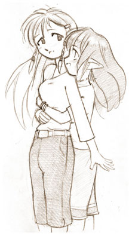
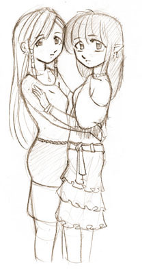

ShoujoAi.com's mission is to provide a number of helpful and enjoyable facilities for the yuri fandom.
Ever since our founding in 2001, fanfiction (fan-written stories about anime and manga characters) has been a central focus of the site. Our Fanfiction section contains hundreds of yuri stories of all varieties from many anime and manga titles, and also includes original works.
Also a primary attraction is our forum. From comparing favorite couples, discussing shoujo-ai classics, and speculating about new and upcoming anime and manga, our hope is that you will find our community active and welcoming. There are also areas to discuss both serious and lighthearted non-yuri topics, as well as an official chat room for more conversational yuri discussion.
Finally, for those with a taste for a more interactive yuri experience, we offer a fully functional roleplaying environment in the Shoujo-Ai MUSH. In this text-based setting you will be able to create a character and explore Yuriba, a small island that is home to a thriving lesbian community.
We hope that you will enjoy what Shoujoai.com to offer.
Arine and Mia, Mascots
|  |
Name: Arine Age: 18 Birthdate: March 3 Bloodtype: A Height: 5'7" Weight: 120 lb Likes: Cooking, reading, being helpful and Mia's ears Dislikes: Crowds and dressing up Personality: Introspective, insecure and self-conscious Name: Mia Age: 19 Birthdate: October 14 Bloodtype: O Height: 5'5" Weight: 109 lb Likes: Jewelry, pretty colorful clothes, having fun and making Arine smile Dislikes: Mean people Personality: Happy, energetic and compassionate Buy products with Mia and Arine on them at our store. Do you like Arine better or Mia? Cast your vote on the forum here. Pictures, fanart and fanfiction here! Original design and artwork by Toweringman. |
 |